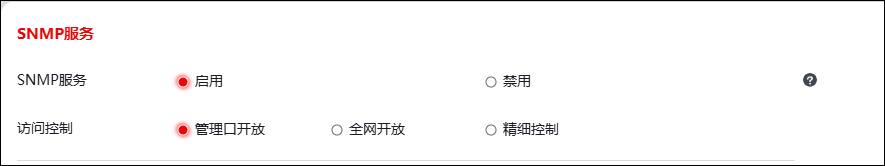
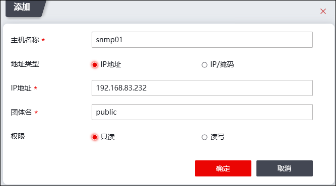
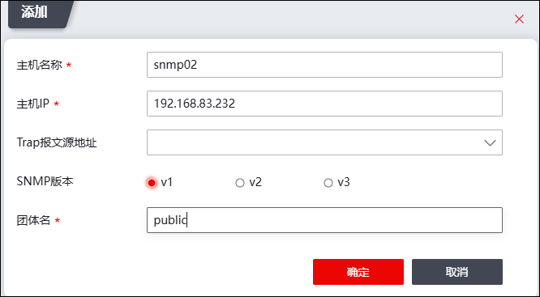

在防火墙上配置SNMP服务前，需在SNMP管理主机/陷阱主机中安装SNMP网管软件，如PRTG Network Monitor、SolarWinds、HP Open View等等。已知DMZ区SNMP管理/陷阱主机的IP地址为192.168.83.232。
下面介绍如何在防火墙上添加SNMP管理主机/陷阱主机，以允许相应SNMP管理主机对其进行监控，以及主动向SNMP陷阱主机发送Trap消息和报警消息。
| 步骤1 | 开放SNMP服务。 |
1）选择 。
2）点击【启用】按钮，开启SNMP服务，设置SNMP服务访问控制范围。

| 步骤2 | 添加SNMP管理主机。 |
1）选择 系统管理 > SNMP > V1V2主机
2）点击『添加』，添加SNMP管理主机，如下图所示。

3）点击【确定】按钮完成管理主机的添加。
| 步骤3 | 添加SNMP陷阱主机。 |
1）选择 系统管理 > SNMP > Trap主机。
2）点击『添加』，添加SNMP陷阱主机，如下图所示。

3）点击【确定】按钮完成陷阱主机的添加。